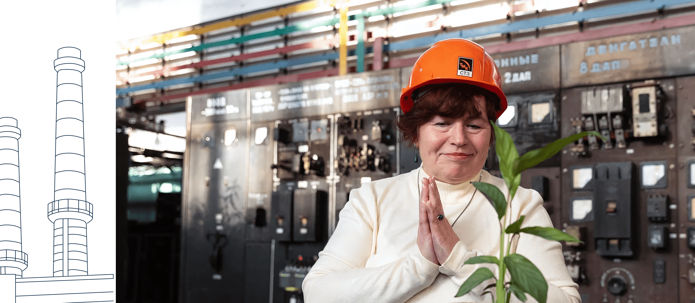

Татьяна Алексеевна Фоминых
Татьяна Алексеевна Фоминых (Зюзёва). «Нельзя останавливаться»
 Татьяна Алексеевна Фоминых
Татьяна Алексеевна Фоминых
Дата рождения: 06.01.1959. Закончила химфак Уральского государственного лесотехнического университета (УГЛТУ). Стаж работы на СТЗ — 25 лет.
Руководила лабораторией фасонно-литейного цеха, газовой группой химической лаборатории Научно-исследовательского центра. Участвовала во внедрении новых приборов, разработке новых инструкций, аккредитации лаборатории мартеновского цеха.
Татьяна Алексеевна формально уже не числится сотрудницей СТЗ, но на заводе она навсегда осталась своей. Чтобы это почувствовать, достаточно сходить с ней на СТЗ. Татьяне Алексеевне рады все: от охранника на проходной до кассира в столовой. А еще она состоит в ветеранской организации завода и постоянно участвует от СТЗ в различных мероприятиях.


 Татьяна
Татьяна Фоминых
Я с самого начала знала, что пойду на завод. Училась по специальности «химик» и понимала, что на заводе будут подходящие вакансии. Других альтернатив не видела. Мама у меня медик, но этот путь не увлек, даже не рассматривала такой вариант.
Устроилась на заводе в лабораторию. Там меня очень приветливые люди встретили. Помню, женщина, которая вышла ко мне, говорит: «А я твоего папу знаю. Его тут все знают. Раз ты дочь Алексея Михайловича, значит, приживешься у нас, значит, ты наша». И у меня все время было это чувство ответственности, что я должна работать не хуже папы, держать марку.
За время работы на СТЗ довелось руководить лабораторией фасонно-литейного цеха, группой химической лаборатории. Работала в лаборатории Трубоэлектросварочного цеха № 2 (ТЭСЦ-2), еще была лаборатория, которая обслуживала мартеновский цех. Ситуации всякие возникали. Одних нужно уговорить, других убедить. Трудно приходилось. Бывали и обиды, и недопонимание. Такая хорошая школа жизни.
Когда меня выбрали председателем цехового комитета, помимо основной работы появилась общественная. Стало интереснее. Думаю, тогда я и научилась собирать людей, говорить с ними не только по рабочим вопросам, но и по профсоюзным делам. То надо концерт организовать, то кого-то на лечение отправить, кому-то путевку найти. Интересно было.


 Анатолий
Анатолий Зюзёв
У Алексея Михайловича круг общения был широчайший. Думаю, Таня, глядя на отца, еще с детства усвоила: надо быть коммуникабельной.
 Валерий
Валерий Зюзёв
Таня очень активная, умеет добиваться своего. Если надо организовать людей, она организует. Кстати, отец с дядей Алешей также это умели. Надо провести мероприятие или собрать людей — пожалуйста, они это делали. Не каждому дан такой талант. Мне, например, это не под силу. Надо ведь со всеми поговорить, кого-то убедить, с кем-то договориться. Таня это умеет. А еще она очень целеустремленная.
Татьяна Фоминых
Когда появился электросталеплавильный цех, старая кислородная станция стала не нужна. Ее закрыли, а за ней и лабораторию, где я работала. При этом открыли новый кислородный цех, который давал мощные объемы для печи ковша. И не было специалистов для работы в новой лаборатории. Меня тогда очень уговаривали: «Ты же знаешь эту работу, давай, переходи!» Но это уже не на СТЗ было. То есть, меня звали работать для завода, но хозяева предприятия находились уже в Москве. Это был трудный момент для меня. И если бы не одобрение папы, который других мест работы не признавал, я бы не перешла, наверное. Со слезами шаг давался. Все-таки 25 лет на заводе проработала.
Сейчас я официально — ветеран СТЗ. Состою в ветеранской организации завода. От совета участвую в разных мероприятиях. Лыжные гонки, кроссы — везде выступаю за ветеранов СТЗ и горжусь этим.
Я с детства занималась спортом, ходила в лыжную секцию. Но к тому, чтобы участвовать в пробегах с отцом, кажется, пришла сама. Папа никогда не тянул. Лишь потом, когда он стал участвовать только в небольших местных пробегах, что-то меня туда привело. Наверное, хотелось отца поддержать. Помню, он дома обсуждал: мол, этот не сможет, тот не придет — участников получится меньше, чем рассчитывал. И я понимала: нужна моя поддержка, тем более силы и возможности были. Так потихонечку и втянулась, а теперь остановиться не могу.
Самым сложным, наверное, был горный 42-километровый марафон «Конжак» в 2010 году. Очень трудно пришлось, но понравилось. О «Конжаке» узнала от участницы Бажовского пробега, приехавшей из другого города. Она описала тамошние красоты, плюсы организации. Я и загорелась. Пробежала, получила медаль, очень гордилась. Через несколько лет повторила забег.
Еще был лыжный марафон «Европа-Азия» — из Первоуральска в Екатеринбург. С 2010 года трижды пробежала там по 50 км. В рамках того же марафона бегала в разные годы по 15, 35 и 37 км. Честно говоря, сама не знала, что на такое способна. Но спортсмены из папиного окружения заставили поверить в себя. Мол, видим, что можешь. Ну я и поддалась. У меня тогда дочка Марина серьезно лыжами занималась, помогала готовить снаряжение, а завод помог с транспортом. У меня всегда был девиз — дорогу осилит идущий. И еще — нельзя останавливаться. Пока двигаешься — это всегда дорога вверх.
Туризм и походы впитала с детства. Часто собирались в походы целыми трудовыми семьями. Медянцевы, Зюзёвы, еще две-три фамилии. Это были «походные» семьи: папа организовывал своих друзей, работников завода, и мы ходили по местным маршрутам с ночевкой в избушках.
Такое походное детство у нас было. С тех пор мы все дружим. Помню, как однажды пошли в поход, взяли все для готовки пельменей, а муку не взяли. Что делать? Макароны растолкли, пельмени налепили, выставили на улицу, чтобы они заморозились. Через какое-то время выходим, а все пельмени собаки съели. Такая вот история.
Помню заводской турслет, когда все только начиналось. Это конец 60-х — начало 70-х. В нашей команде были работники со своими детьми, поэтому папа нас так и назвал — «Отцы и дети». Делали юбочки и шапочки из папоротника — получались такие папуасики.
Сейчас уже более десяти лет занимаюсь организацией заводских турслетов. На них соревнуются команды цехов. Результаты идут в зачет заводской Спартакиады. Еще вхожу в заводской турклуб «Малахит». Выезжаем в походы, сплавляемся по рекам. В 2022 году была в составе команды, которая участвовала в чемпионате России по походам высшей категории.


 Александра
Александра Зюзёва
Как-то Татьяна пригласила в поход. Говорит: «Саша, будет очень тепло, не переживай, ночевать в тепле будем». Выехали утром — минус 35. Снега по колено, «тепло». Хорошо еще ветра не было. Пришли в дом, он, конечно, топится. Уже не минус 35, даже какой-то плюс, но я-то люблю, чтобы плюс 30 было. Вот такое путешествие. В новогодние каникулы — в гору. Но было очень красиво, когда на вершину поднялись. Облака отсутствовали, видимость идеальная. В итоге ничуть не пожалела, что пошла.
Или вот еще история. Наступает 1 января. Все спят, а мы на лыжах. Смотрим, еще кто-то на лыжах идет, с двумя детьми. Думаем: интересно, кто такие? 1 января спозаранку, да еще с детьми, ну прямо как мы. Смотрим, это ж наши! Тетя Таня, с детьми и внуками.


 Татьяна
Татьяна Фоминых
Историей семьи я начала интересоваться вот как. Лет 10-15 назад позвонил мне мужчина. Знаете, говорит, а я ваш родственник. Отправил древо своего рода: мол, посмотрите, увидите там и своих родных. Смотрю, и правда — там бабушки мои, родня разная. Интересно стало. А он продолжает: давай вместе древо вести. Ты добавишь своих, о которых у меня нет сведений. Так мы и подружились. Он мне помог специальную программку на компьютер установить, объяснял, какие вопросы надо задавать, на что обращать внимание, какие фотографии спрашивать. Этого человека зовут Юрий Бибиков, он раньше работал замом главного бухгалтера на Северском трубном заводе.
Рада, что успела еще при жизни отца составить большое генеалогическое древо, причем не только тех, кто работал на заводе, но и других родственников.

Валерий Зюзёв 


Александра Зюзёва